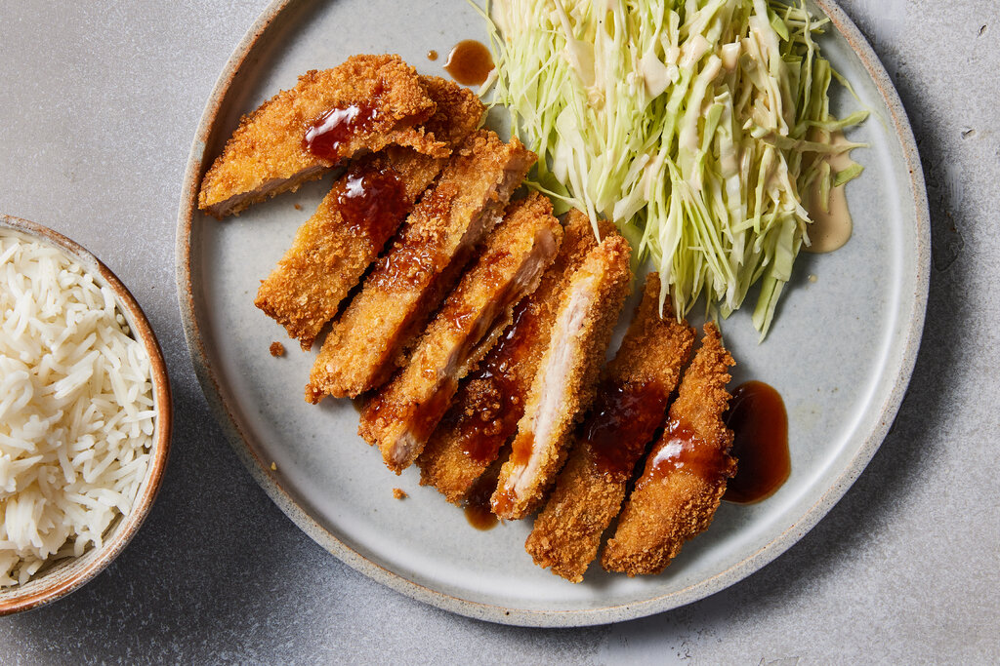

Tonkatsu

This Tonkatsu recipe uses thinly sliced boneless pork chops and panko, which are Japanese bread crumbs that are really light and airy. Cook this up for your Japanese baddies!!
Ingredients
- 2 eggs
- 1 teaspoon milk
- ½ teaspoon minced garlic
- salt to taste
- ½ teaspoon pepper
- 1 cup vegetable oil for frying
- 8 thin cut boneless pork chops
- 1 ½ cups panko crumbs
Steps
- Combine eggs, milk, garlic, salt, and pepper in a medium bowl until well mixed. Heat oil in a large heavy skillet over medium-high heat. Place panko crumbs in a shallow bowl.
- Dip pork chops in egg mixture, then coat with panko crumbs; dip in the egg mixture again, then coat with another layer of panko crumbs. Lay coated chops on a plate until the rest are finished. If you have time, let them set for about 10 minutes, and the coating will set very well.
- When oil is very hot, place pork chops into the pan, and fry for about 5 minutes on each side, until golden brown.